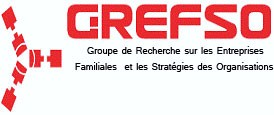
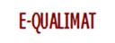
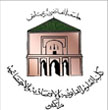

Présentation
Les groupes de recherche en gestion de l'Université Cadi Ayyad (E-QUALIMAT, GREFSO, GREMID et LAREGO) mutualisent leurs ressources pour l'organisation des 1ères doctoriales en management les 12 et 13 Mai 2011 à Marrakech.
Cette rencontre est une occasion de présentation par les doctorants de l'état d'avancement des travaux de thèse et un lieu de débats autour de problématiques de recherche en management en général et dans quatre champs disciplinaires qui sont les spécialités des structures de recherche organisatrices :
- Finance (GREMID)
- Management des entreprises familiales et stratégie des organisations (GREFSO)
- Marketing et qualité (E_QUALIMAT)
- GRH (LAREGO)


